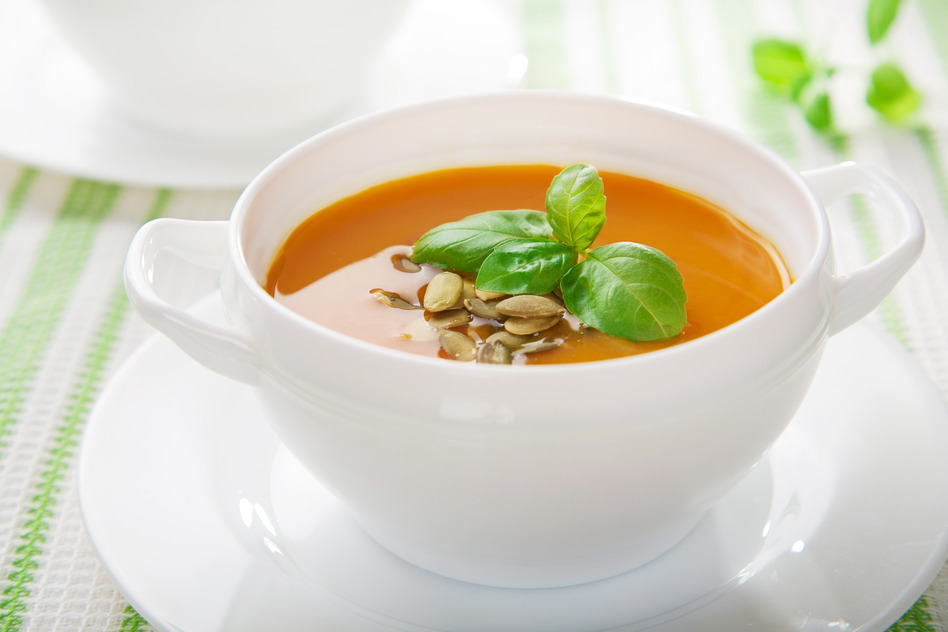

Jordy's heerlijke pompoensoep
Op zoek naar een lekker recept voor pompoensoep? Het pompoenen seizoen is weer begonnen en in de supermarkten en op de markt zijn overal weer pompoenen te krijgen. Pompoenen in vele maten en soorten waar je de lekkerste dingen van kan maken zoals ook lekkere soep van pompoen. Hieronder een basis pompoensoep recept. Verder op de site nog veel meer recepten voor heerlijke soep maar ook andere lekkere pompoen recepten.
Pompoensoep ingrediënten
- 1 pompoen (ongeveer 1 1/2 kilo)
- 1 liter bouillon (bv groenten of kippenbouillon)
- 2 uien
- 1 teentje knoflook
- 1/2 prei
- 1 winterwortel geschild
- 2 theelepels kerriepoeder
- 1/2 theelepel cayennepeper
- 1 theelepel kurkuma
- 1 theelepel komijn
- scheutje olie
- 1 dl kookroom
Pompoensoep maken
- Snijd de pompoen door de helft en haal de pitten er uit
- Schil de pompoen en snijd deze in stukjes net als de winterwortel (2 bij 2 cm ofzo)
- Snipper de ui en snijd de knoflook fijn
- Snijd de halve prei in halve ringetjes en was goed
- Zet een pan op het vuur en giet er een scheutje olie in
- Bak de uien lichtjes aan in de olie en voeg daarna de knoflook toe
- Bak heel kort mee (mag niet kleuren) en voeg daarna de kerriepoeder/komijn/kurkuma/cayennepeper toe
- Roer door en doe de overige ingrediënten erbij behalve de kookroom (pompoen,prei,wortel en bouillon)
- Breng aan de kook en laat minimaal een half uurtje koken tot de pompoen lekker zacht geworden is
- Mix de soep glad met de staafmixer en voeg daarna de kookroom toe
- Breng eventueel op smaak met wat zout of een extra bouillonblokje